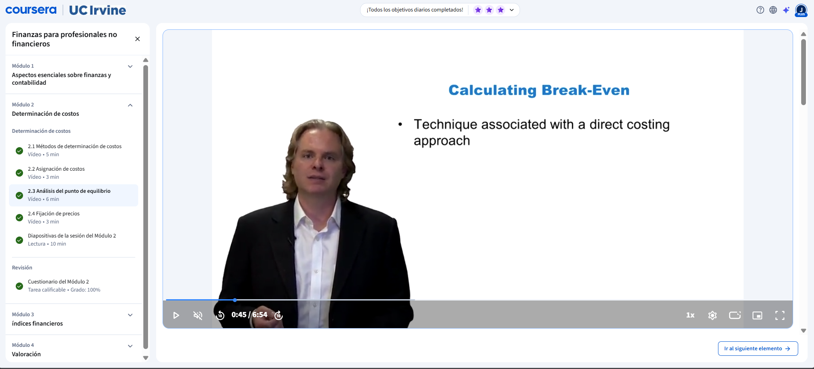

Métodos de determinación de costos
Se presentan los tres métodos principales para calcular costos. Los costos de proceso se aplican cuando se produce grandes cantidades de un mismo producto, distribuyendo los costos generales entre el número de unidades. Los costos estándar utilizan un promedio para simplificar el registro cuando los precios fluctúan constantemente. Los costos por pedido se usan cuando cada producto tiene características y perfiles de costo distintos, calculando el costo real de cada unidad o lote de forma individual.
Asignación de costos
Se explican las tres formas de asignar costos a un producto. El costo directo incluye únicamente los insumos consumidos directamente en la producción, los que solo existen si el producto se fabrica. El costo de absorción añade algunos costos indirectos como la mano de obra, distribuyéndolos entre las unidades producidas. El costo completo absorbe absolutamente todos los costos de la operación, tanto directos como indirectos, dando una visión total de lo que realmente cuesta producir cada unidad.
Análisis del punto de equilibrio

Se introduce el punto muerto o umbral de rentabilidad como herramienta clave para evaluar la viabilidad de un negocio. Se calcula dividiendo los costos fijos totales entre el margen de contribución por unidad, que es la diferencia entre el precio de venta y el costo variable unitario. El resultado indica cuántas unidades deben venderse para que el negocio no gane ni pierda dinero, y a partir de esa cantidad cada unidad adicional genera beneficio puro.
Fijación de precios

Se explica cómo los diferentes métodos de costeo orientan la estrategia de precios según el contexto. En épocas de baja demanda y alta competencia, conocer el costo directo permite ofrecer precios mínimos sin incurrir en pérdidas. En épocas de alta demanda y plena capacidad, usar el costo completo garantiza que cada trabajo adicional sea verdaderamente rentable, considerando los riesgos y costos extras como horas extraordinarias.